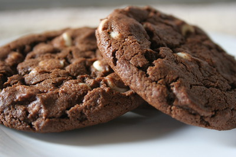

Home
Chocolate Cookies

Description
Make 4 dozen delicious chocolate cookies in minutes with this short recipe.
Once you taste them, you won't forget them. Perfect when you need a quick dessert fix.
Ingredients
- 2 cups white sugar
- 1 cup unsalted butter - softened
- 2 large eggs
- 2 teaspoons vanilla extract
- 2 cups all-purpose flour
- Three-quarters of a cup of unsweetened cocoa powder
- 1 teaspoon baking soda
- A half of a teaspoon of salt
- 1 and two-thirds of a cup of white chocolate chips
Steps
- Gather all ingredients. Preheat the oven to 350 degrees F (175 degrees C).
- Beat sugar and butter together in a large bowl with an electric mixer until
smooth and creamy.
- Add eggs, one at a time, beating well after each addition. Stir in vanilla.
- Combine flour, cocoa, baking soda, and salt in a bowl. Stir into the creamed mixture.
- Fold in white chocolate chips.
- Drop spoonfuls of dough 2 inches apart onto ungreased baking sheets.
- Bake in the preheated oven until set, 8 to 10 minutes. Remove from the oven, let cool on
the baking sheets for 5 minutes, then transfer to a wire rack to cool completely.